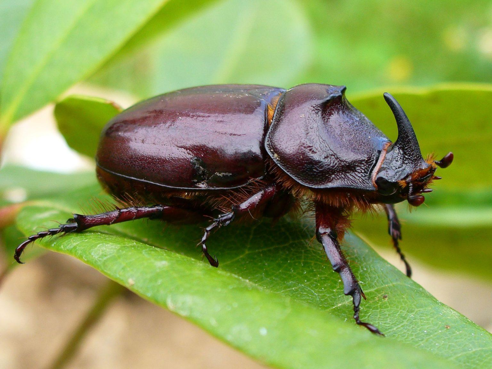

Insect House
Enter the fascinating world of creepy crawlies! The Insect House is home to one of the largest and most diverse insect collections in the world, featuring everything from shimmering butterflies to armored beetles and industrious ants.
What you can explore:
- Butterfly Dome – walk among free-flying butterflies in a lush, tropical setting
- Ant Colony – observe the fascinating world of ants and their complex social structures
- Interactive Spider Exhibit – get up close (but not too close!) with some of nature’s most misunderstood creatures
- Beetle Gallery – marvel at the incredible diversity of beetles from around the globe
WHERE WILL YOU FIND IT?
The Insect House is located just north of the Coffee Shop, next to the Lost Forest trail.